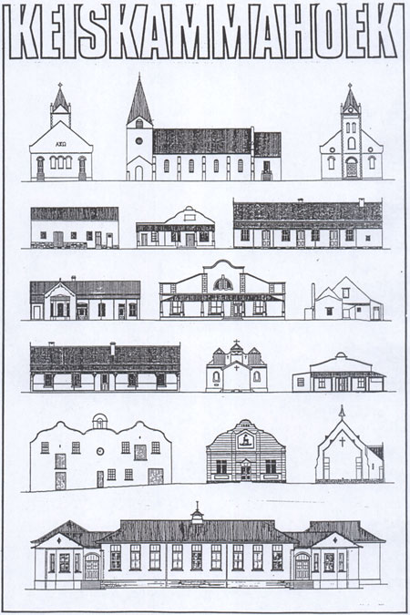

home
|
franco frescura
|
architecture
|
urban issues
|
lectures
|
graphic work
|
postal history
|
historical archive
HISTORICAL CONSERVATION
Barney Barnarto ward
blockhouses fortifications of southern african war
monuments or economic developments
The Development Of A Conservation Strategy For Small Urban Centres In The Eastern Cape
convict stations and the cape colonial post office
Diary of historical dates Johannesburg 1806-1976
Keiskammahoek
Lighthouses of the cape colony
List of cGH government buildings
List of military buildings in the CGH
Listing of bridges in the CGH
National or nationalist
Open air museum: a critique of current policies
styles of southern african architecture
a typology of simple domestic forms
conserving Uitenhage
Who needs monuments

Copyright @ francofrescura.co.za